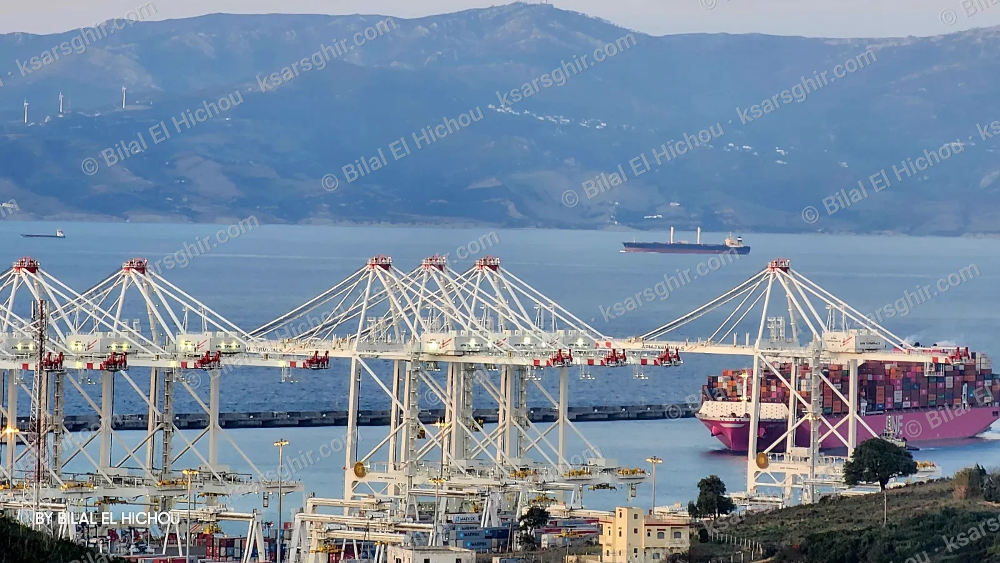

Bienvenue sur le guide touristique de Ksar Sghir, en quatre langues•Découvrez 16 destinations : plages, ports et histoire•Note : Le site est actuellement en version bêta (test). Restez à l'affût, une nouvelle version riche en nouveautés arrive très bientôt inchallah !•
Bienvenue sur le guide touristique de Ksar Sghir, en quatre langues•Découvrez 16 destinations : plages, ports et histoire•Note : Le site est actuellement en version bêta (test). Restez à l'affût, une nouvelle version riche en nouveautés arrive très bientôt inchallah !•
Horaires des ferries au port de Tanger Med : direct et lignes
Arrivées des ferries en direct au port de Tanger Med, carte des lignes vers Algésiras, Barcelone et Gênes, durées approximatives et conseils aux voyageurs.

~ 1h30Tanger Med ⇄ Algésiras
Tous les joursNombreuses traversées jour et nuit
Tout prèsde Ksar Sghir par la route côtière
⚠️ Avant de partir : les horaires peuvent changer à tout moment, surtout par fort vent d’est et en pleine saison. Cette page n’est pas officielle ; le tableau en direct est affiché tel quel depuis le port de Tanger Med. Vérifiez toujours votre traversée auprès de la compagnie et arrivez au port bien en avance.
Tableau des ferries en direct
Les informations proviennent directement du tableau des traversées du port de Tanger Med et se mettent à jour seules.
Données affichées telles quelles depuis le tableau du port.
Carte satellite des lignes
Le port de Tanger Med est tout près de Ksar Sghir, face à Algésiras en Espagne. Les tracés sont approximatifs ; la route réelle dépend du navire et de la météo.
Tanger Med ⇄ AlgésirasLignes vers l’EuropeTanger Ville ⇄ Tarifa· Tracés approximatifs
Lignes principales
Ligne
Durée approx.
Remarques
Tanger Med ⇄ Algésiras
~ 1h30
La plus fréquente, plusieurs compagnies chaque jour
Tanger Med ⇄ Barcelone / Gênes
Plus d’un jour
Longues traversées, pratiques en voiture vers le cœur de l’Europe
Tanger Ville ⇄ Tarifa
~ 1h
Part du port de Tanger Ville, pas de Tanger Med
Durées indicatives selon le navire et la météo. D’autres lignes et compagnies existent selon la saison ; la référence reste le tableau en direct et les compagnies.
Conseils pratiques (non officiels)
⏰ Arrivez tôt, surtout en voiture et l’été : douane et police prennent du temps.
🌬️ Surveillez le Levante : un fort vent d’est peut retarder ou annuler les traversées. Voir la mer aujourd’hui.
🧳 Documents : passeport valide, visa si nécessaire, papiers du véhicule.
☀️ Opération Marhaba : l’été, l’affluence est forte ; réservez tôt.
🎫 Billets : réservez sur le site officiel de la compagnie ou via une agence fiable et gardez la confirmation.
Questions fréquentes
Combien dure la traversée Tanger Med – Algésiras ?
Environ une heure et demie, selon le navire et la météo.
Où trouver les horaires à jour ?
Dans le tableau en direct ci-dessus, sur le site officiel Tanger Med Passagers et auprès de votre compagnie.
Le Levante annule-t-il les traversées ?
Par vent fort, des retards ou annulations sont possibles. Vérifiez avec la compagnie avant de partir.
Les ferries pour Tarifa partent-ils de Tanger Med ?
Non, la ligne de Tarifa part en général du port de Tanger Ville. Depuis Tanger Med, la ligne principale est Algésiras.
Sources : tableau en direct du port de Tanger Med et site Tanger Med Passagers. Image satellite : Esri. Guide indicatif du site Ksar Sghir, sans lien avec un organisme officiel.